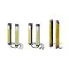

Building Automation
Industrial Automation
Power Automation & Safety


Bangladesh Distributor
Safety Components
Hazards Generated by Machinery,Strategies for Selecting Safety Measures,
Related Contents
- Safety Components
What Is Safety? The Social Background
In the manufacturing industry, production consists of processing, assembling, and transporting materials. In modern times, machines use large amounts of energy to absorb the burden from workers to assist in production. This result in the wide range of development in machines that we see today. And trained workers based on experience in operating the machines create more stable quality, causing the relationship between machines and production to continue and evolve into many forms today.
1.The Social Background to Machine Safety
(1) Changes in People
In some countries, changes in social structure have brought changes in the people that work at production sites. For example, many experienced workers are retiring while the working population shrinks due to lower birth rates. At the same time, forms of employment continue to diversify, such as the increasing number of temporary employees and there is a continued increase in employees working overseas. Diversification also continues to increase in other ways, such as age, sex, experience, language, and social habits.
(2) Changes in Machines and Production Facilities
Today's society is facing more diversification in consumer needs driving demands for more variation in products. Production sites are required to change between many different products at relatively short intervals, resulting in frequent changes to production facilities. Machines required for production must support more functionality. This and many other changes require that workers must master new techniques and working procedures.
(3) Changes in Production Locations
Market globalization has taken production sites from fixed sites across national borders. Domestic production is faced with the need for more competitive products and new markets combined with demand for production sites in newly industrialized countries, such as BRICs. Offshore production means dealing with different laws, infrastructures, cultures, and values. The machines and production facilities resulting from the accumulated knowhow of industry domestically must now be used in different human environments.
(4) Changes in Social Consciousness
In mature civil societies, companies must take social responsibility for their activities. For example, they must assume product liability for the products that they produce. Although conditions vary by country, all countries now have laws requiring product safety to protect the consumer. (For example, Japan and the USA have product liability laws and the EU has the EC directives.) It is not necessary to provide examples of product accidents to realize the very strict monitoring of manufacturing liability for safety and ease of mind in societies that share a common ideal of respect for human beings. And based on these ideals, the responsibility of companies for the safety of workers on production sites is also strictly monitored. (For example, OSHA in the USA, the Revised Industrial Safety and Health Law in Japan, and EC directives in the EU.) Companies face not only criminal, civil, and damage liability for any accidents that might occur, but their corporate image is greatly hurt as a result. The social liability of companies for the safety of their workers has skyrocketed in recent years.
The relationship between workers and machines and the environment in which they operate has thus changed on a global scale. And yet, manufacturing is not possible until a worker operates a machine. Across changes in the operating environment, society demands that machines and production facilities can be used safely regardless of where they are used or who uses them. This is required not only in the workers, but also in the machines and hardware technology. As a result, global standards for safety are required for today's production sites. This is the concept of Machine Safety.
Machinery Safety
The European Standards (EN Standards) in force since 1993 are representative standards on machinery safety. They are technical standards enacted to ensure compliance with basic safety requirements stipulated by the Machinery Directive across Europe, and compliance with these standards is a condition for obtaining the CE marking, required since 1995 for distribution in Europe. The following sections describe the basic concepts of machinery safety.These safety concepts are currently incorporated into the safety standards of each country as standard international safety concepts.
1.Hazards Generated by Machinery
Hazards occur in areas where machine work areas (machine operating output) and human work areas overlap.
Classifications and Examples
The general hazard classifications according to EN ISO 12100-1, where the basic concepts of machinery safety are defined, are shown below.
(1) Mechanical Hazards
Crushing, entanglement, stabbing or puncturing, shearing, drawing-in or trapping, friction or abrasion, cutting or severing, high-pressure fluid ejection, etc.
(2) Electrical Hazards
Contact by a person with live parts, i.e., parts that normally carry a voltage, or parts that have become live under faulty conditions, especially as a result of an insulation failure, etc.
(3) Thermal Hazards
Burns and scalds from flames, explosions, radiation from heat sources, etc.
(4) Hazards Generated by Noise
Hearing loss, tinnitus, etc.
(5) Hazards Generated by Vibration
Serious damage to the entire body, particularly to the hands, arms, and lower back.
(6) Hazards Generated by Radiation
Low frequencies, radio frequencies, ultraviolet, infrared, X-rays, etc.
(7) Hazards Generated by Materials and Substances
Toxins, irritants, dust, explosions, etc.
(8) Hazards Generated by Neglecting Ergonomic Principles in Machine Design
Unhealthy postures, human error, etc.
2.Strategies for Selecting Safety Measures
(1) Safety Measure Strategy
All machines fail and everyone makes mistakes. Therefore, basic designs that take every precaution to ensure the safety of workers is required in the event of a fault.
(2) Machinery Hazard Prevention
Machinery hazards occur in hazard areas, where the human workspace overlaps the machine workspace.Preventing machinery hazards begins by eliminating mechanisms that facilitate hazardous conditions.The following strategies are generally used to achieve this goal.
Recommended Products
 D4N
D4N
Upgraded Safety Limit Switches Based on the Popular D4D, Pro...
F3SJ Ver.2
The updated F3SJ is even easier to use.
OS3101
Operator Presence Detection in Work Areas with Complex Shape...